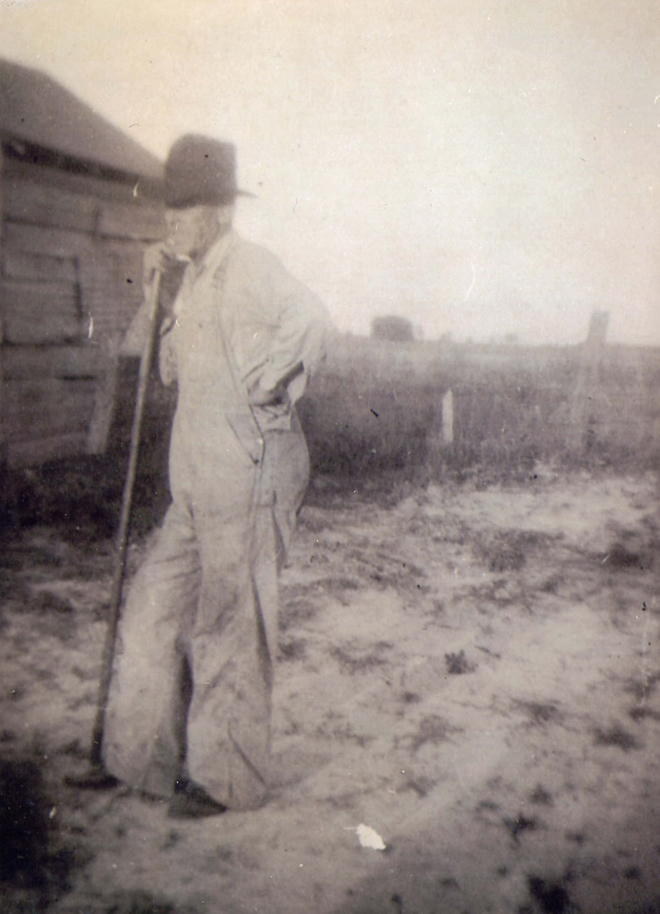

George William Singletary
1895–1964
Life Events
Born: November 15, 1895 — Old Town, Dixie County, Florida
Died: October 7, 1964 — Lake City, Columbia County, Florida
Family
Father: John Vershal Singletary
Mother: Mary Bryant
Siblings
Spouse: Lela Mae Mathis
Children
Military Service
Branch: United States Army
Conflict: World War I
Unit: 124th Infantry
Company: Company B
Rank: Private
Enlisted: September 19, 1917
Discharged: January 18, 1918
Biography
Biography information has not yet been added.
Photos

Grave & Burial

Airline Cemetery, Mayo, Lafayette County, Florida
Sources
-
1900 United States Census - John Singletary Household
Type: CensusThe 1900 United States Census records George Singletary as a young child living in the household of John Singletary and his wife, Mary, in Lafayette County, Florida.
Location: Lafayette County, Florida, United States
Household Members:
- John Singletary - Head
- Mary Singletary - Wife
- Jessie Sinngletary - Son
- Annie Sinngletary - Son
- George Singletary - Son
- Albert E. Singletary - Son
Supports: George William Singletary living in the household of John and Mary Singletary in 1900, George William Singletary's residence in Lafayette County, Florida, in 1900
-
1910 United States Census - John Singletary Household
Type: CensusThe 1910 United States Census records John and Mary Singletary living in Lafayette County, Florida, with their children Annie, George, Albert, Allis, and Viola. John Vershal Singletary's brother, Jacob Singletary, is recorded separately on the same census page.
Location: Lafayette County, Florida, United States
Household Members:
- John Singletary - Head
- Mary Singletary - Wife
- Annie Singletary - Daughter
- George Singletary - Son
- Albert Singletary - Son
- Allis Singletary - Daughter
- Viola Singletary - Daughter
Supports: George William Singletary living with his parents and siblings in 1910, George William Singletary's residence in Lafayette County, Florida, in 1910, George William Singletary as a member of the John and Mary Singletary household
-
Marriage License - G. W. Singletary and Lela May Mathis
Type: Marriage RecordMarriage license and return documenting the marriage of G. W. Singletary and Lela May Mathis. The license was issued in Lafayette County on March 5, 1917. The couple was married on March 6, 1917, and the record was filed on March 15, 1917. The record identifies the bride as "Lela May Mathis."
Location: Lafayette County, Florida, United States
Supports: Marriage of George William Singletary and Lela Mae Mathis on March 6, 1917, Marriage in Lafayette County, Florida, Contemporary record of Lela's name as Lela May Mathis
-
World War I Draft Registration Card - George W. Singletary
Type: Military RecordWorld War I draft registration card for George W. Singletary, completed on June 5, 1917. George reported that he was born on November 15, 1895, in Old Town, Florida, and was living in Mayo, Florida. He reported his occupation as farming and identified J. A. Croft as his employer. George stated that he was married and was supporting his wife and one sister. He also cited his wife and one sister when claiming exemption from the draft. The registration card contains George W. Singletary's signature.
Location: Precinct No. 2, Lafayette County, Florida, United States
Supports: George William Singletary's birth date of November 15, 1895, George William Singletary's birthplace as Old Town, Florida, George William Singletary's residence in Mayo, Florida, in 1917, George William Singletary working in farming for J. A. Croft, George William Singletary being married by June 1917, George William Singletary supporting his wife and one sister in June 1917
-
U.S. Veterans Bureau Master Index - George W. Singletary
Type: Military RecordU.S. Veterans Bureau Master Index card for George W. Singletary. The record identifies him as a Private in Company B, 124th Infantry. It records his birth date as November 15, 1895, his enlistment date as September 19, 1917, and his discharge date as January 18, 1918. His residence is recorded as Alton, Florida.
Location: Alton, Florida, United States
Supports: George William Singletary's birth date of November 15, 1895, George William Singletary's military service as a Private, George William Singletary's service in Company B, 124th Infantry, George William Singletary's enlistment on September 19, 1917, George William Singletary's discharge on January 18, 1918, George William Singletary's residence in Alton, Florida
-
1920 United States Census - George W. Singletary Household
Type: CensusThe 1920 United States Census records George W. Singletary and his wife, Lela M. Singletary, living in Precinct No. 2, Mayo, Lafayette County, Florida. Their five-month-old son, Dewey, appears as "Duie" in the census. George's younger sisters Alice Geneva and Viola Singletary were also living in the household. The census page was enumerated on January 28 and 29, 1920.
Location: Precinct No. 2, Mayo, Lafayette County, Florida, United States
Household Members:
- Gorg W. Singletary - Head
- Lela M. Singletary - Wife
- Duie Singletary - Son - age 5/12
- Allice Singletary - Sister
- Viola Singletary - Sister
Supports: George William Singletary living in Lafayette County, Florida, in 1920, Lela Mae Mathis living as George William Singletary's wife, Dewey Singletary living as their five-month-old son, Alice Geneva Singletary living in George William Singletary's household as his sister, Viola Singletary living in George William Singletary's household as his sister
-
1930 United States Census - George W. Singletary Household
Type: CensusThe 1930 United States Census records George W. Singletary and his wife, Lela M. Singletary, living in Election Precinct No. 3, Lafayette County, Florida, with their children Dewey, Lewie, Loyd M., Irena, and George W. Lela's brother Glover Mathis appears in a nearby Mathis household on the same census page.
Location: Election Precinct No. 3, Lafayette County, Florida, United States
Household Members:
- George W. Singletary - Head - age 34
- Lela M. Singletary - Wife - age 27
- Dewey Singletary - Son - age 10
- Lewie Singletary - Daughter - age 8
- Loyd M. Singletary - Son - age 6
- Irena Singletary - Daughter - age 4
- George W. Singletary - Son - age 2
Supports: George William Singletary living in Lafayette County, Florida, in 1930, Lela Mae Mathis living as George William Singletary's wife in 1930, Lela Mae Mathis recorded as age 27 in 1930, Dewey Singletary living as a son in the household, George and Lela Singletary living with five children in 1930, Lela Mae Mathis's brother Glover Mathis living nearby